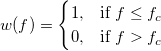
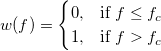
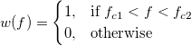
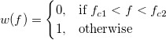
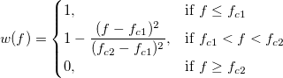

内容 |
FFTフィルタ
FFTフィルタを実行する
1. fft_filters Col(2) cutoff:=5;
2. fft_filters Col(2) filter:=bandpass Freq1:=3 Freq2:=3.6;
3. fft_filters Col(2) filter:=threshold threshold:=1;
4. fft_filters Col(2) filter:=bandblock Freq1:=1.1 Freq2:=1.3 oy:= (Col(3), Col(4));
| 表示 名 |
変数 名 |
I/O と データ型 |
デフォルト 値 |
説明 |
|---|---|---|---|---|
| 入力 | iy |
入力 XYRange |
<active> |
入力データ範囲を指定します。 |
| フィルタの種類 | filter |
入力 int |
ローパス |
フィルタの種類を指定します。 オプションリスト
|
| 低域のカットオフ周波数 | freq1 |
入力 double |
0 |
このオプションは、フィルタの種類がバンドパスまたはバンドブロックの場合のみ利用できます。低域のカットオフ周波数を指定します。 |
| 高域のカットオフ周波数 | freq2 |
入力 double |
1 |
このオプションは、フィルタの種類がバンドパスまたはバンドブロックの場合のみ利用できます。高域のカットオフ周波数を指定します。 |
| カットオフ周波数 | cutoff |
入力 double |
0 |
このオプションは、フィルタの種類がローパスまたはハイパスの場合のみ利用できます。カットオフ周波数を指定します。 |
| パス周波数 | pass |
入力 double |
1 |
このオプションは、フィルタの種類がローパスパラボリックの場合のみ利用できます。この値以下のすべての周波数は、フィルタ通過後に一定となります。 |
| 停止周波数 | stop |
入力 double |
1 |
このオプションは、フィルタの種類がローパスパラボリックの場合のみ利用できます。この値以上のすべての周波数が完全に除去されます。 |
| しきい値 | threshold |
入力 double |
1 |
このオプションは、フィルタの種類がしきい値の場合のみ利用できます。振幅のしきい値を指定します。 |
| DCオフセットを保持 | offset |
入力 int |
1 |
このオプションは、フィルタの種類がハイパス、バンドパス、バンドブロックの場合のみ利用できます。このオプションにチェックが付いていると、DCオフセットはフィルタリング処理中に変更されません。 |
| 出力 | oy |
出力 XYRange |
<新規> |
出力を指定します。 |
フィルタリングは信号データから周波数成分を選択する処理です。FFTフィルターは、 フーリエ変換を使って入力信号の周波数成分を分析するフィルタリングを実行しています。
この関数では、ローパス、ハイパス、バンドパス、バンドブロック、パラボリックローパス、しきい値の6種類のフィルターが利用できます。最初の4つのフィルタが実用上理想的なフィルタです。ローパスフィルターは、カットオフ周波数より大きいすべての周波数成分をブロックし、小さい周波数のみを通します。ハイパスフィルターは、ローパスフィルターの逆で、カットオフ周波数より小さいすべての周波数成分をブロックします。バンドパスフィルターは、低域および高域カットオフ周波数で決められた範囲内の周波数成分を通し、バンドブロックフィルタは選択した範囲の周波数を除去します。ローパスパラボリックフィルタは、窓関数は指定したカットオフ周波数を境界にしていきなりブロックしないという点で理想的なローパスフィルタとは異なります。パスする周波数とブロックする周波数の間で、窓関数は双曲線を描くような周波数を選択します。一方で、しきい値フィルタを選択することができ、これは指定したしきい値以下の大きさを持つ周波数を削除します。
この関数のダイアログでは、変数を変更するとフィルタリングされた信号のプレビューをリアルタイムで見ることができます。カットオフ周波数、パス周波数、ブロック周波数、しきい値は、プレビューウィンドウに表示される線をドラッグして選択することができます。
1. カットオフ周波数を3として、ローパスフィルターを実行するには、アクティブワークシートの2列目のYデータに対して、次のスクリプトコマンドを使います。
2. 事前に保存したテーマファルを使ってデータにfft_filteringを実行するには、 fft_filter ダイアログで自分の設定を保存し、そのテーマファイルのタイトルを使って、以下のようにスクリプトコマンドを入力して実行します。
3. ダイアログを開くには、コマンドウィンドウに次のように入力します。
または、Originのメニューから、「解析：信号処理：FFTフィルタ 」を選択します。プレビューを持つダイアログで、周波数と振幅のグラフ上の赤い線をドラッグしてカットオフ周波数を選択することができます。 左上の領域には、元の信号とフィルタリングした信号が表示されます。このグラフ上に、青い四角形があり、これを移動したり、大きさを変えて、その選択した領域を拡大表示して、右上の領域に表示します。
他のサンプルについては、XFスクリプトダイアログ(F11を押す)をご覧下さい。
最初に入力信号のフーリエ変換が計算されます。そして、ローパス、ハイパス、バンドパス、バンドブロック、パラボリックローパスの各フィルタに対しては、フィルタの種類によって決まるウィンドウがフーリエ変換の掛け算に使われます。変数Keep DC Offsetが1の場合、ウィンドウの最初の点が1にセットされます。しきい値フィルタに対しては、各周波数成分のパワーが調べられます。それがしきい値より大きく無い場合、対応する周波数成分が破棄されます。周波数を変えた後、逆フーリエ変換が実行されフィルタリングした信号データが得られます。
図 ローパスフィルタのウィンドウ
fc をカットオフ周波数とします。窓関数は次式となります。

ハイパスフィルタのウィンドウ
fc をカットオフ周波数とします。窓関数は次式となります。

バンドパスフィルタのウィンドウ
fc1 を下側のカットオフ周波数とし、 fc2 を上側のをカットオフ周波数とします。窓関数は次式となります。

バンドブロックフィルタのウィンドウ
fc1 を下側のカットオフ周波数とし、 fc2 を上側のをカットオフ周波数とします。窓関数は次式となります。

ローパスフィルタのウィンドウ
fc1 をパス周波数とし、 fc2 をブロック周波数とします。窓関数は次式となります。
